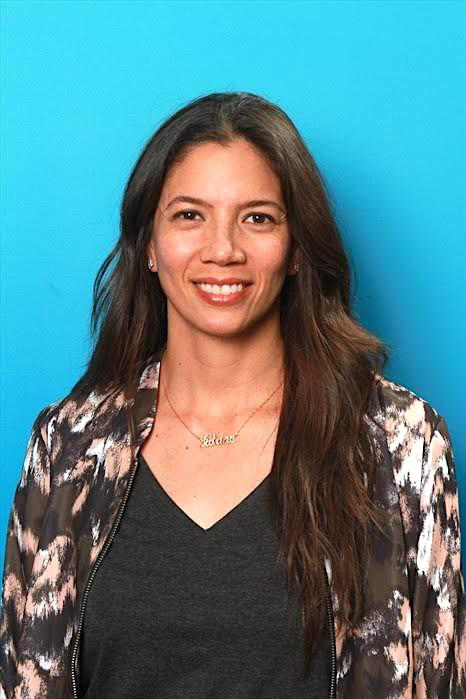
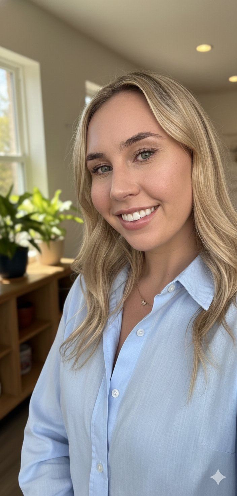

Closed-loop industrial platform
Connecting industrial waste producers with makers and remanufacturers — matching, moving, measuring, and selling reclaimed materials in one integrated system.
The problem
Valuable industrial materials go to landfill every day — not because there's no demand for them, but because there's no infrastructure connecting the two sides. Waste producers pay to dispose of materials that makers and remanufacturers would pay to receive.
LA County's C&D diversion requirements are already in force and rising. ReMade's automated ESG reporting transforms platform adoption from a cost optimization decision into an operational necessity.
The platform
Five stages. One integrated system. Today, waste diversion, materials sourcing, logistics, ESG reporting, and product sales each happen in separate systems — or not at all. ReMade closes the loop.
Who we serve
Turn disposal costs into revenue. List material streams, reduce landfill fees, and gain automated compliance documentation that satisfies LA County's rising diversion mandates.
Access a reliable, affordable supply of local reclaimed material. Build supply chains that don't depend on virgin resources, premium broker markups, or ad hoc personal networks.
"Every material that reaches a landfill is a market failure. ReMade is the exchange layer that makes the circular economy tradeable."
UN SDG 12 · Responsible Consumption & Production · Cleantech Open 2026 Cohort
The founders

20+ years across creative industries, sustainability, and systems thinking. Working in live events and production, she saw firsthand how much valuable material gets discarded — and a parallel world of makers building extraordinary things from exactly those materials. That gap became the foundation for ReMade.

Climate and data platform specialist with a track record in fast-moving startup environments across geospatial and energy infrastructure SaaS. Owns customer acquisition, partnership development, and early market entry for ReMade.